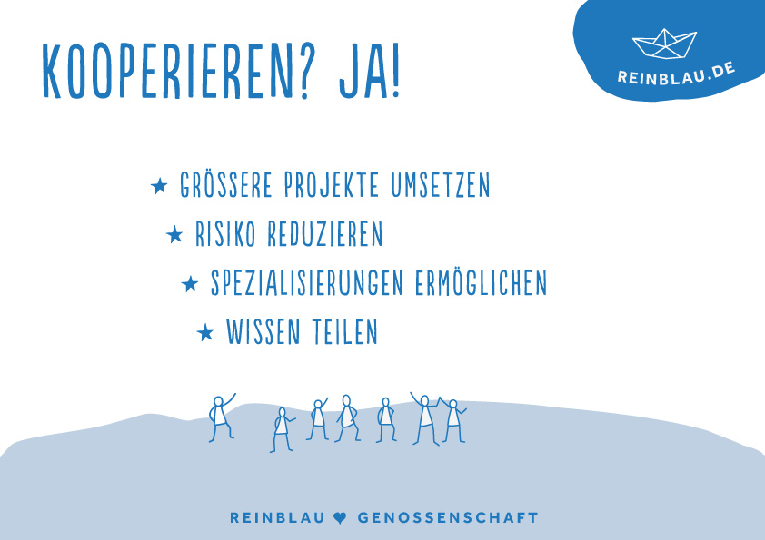
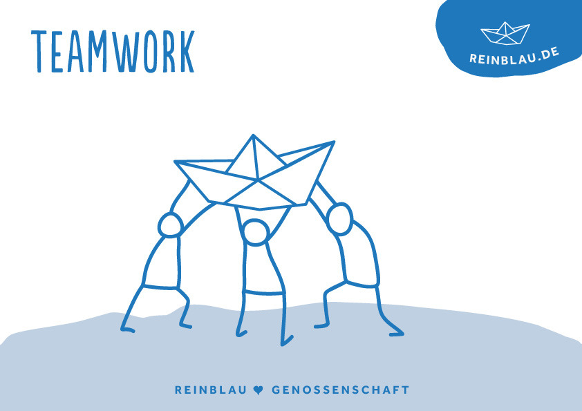
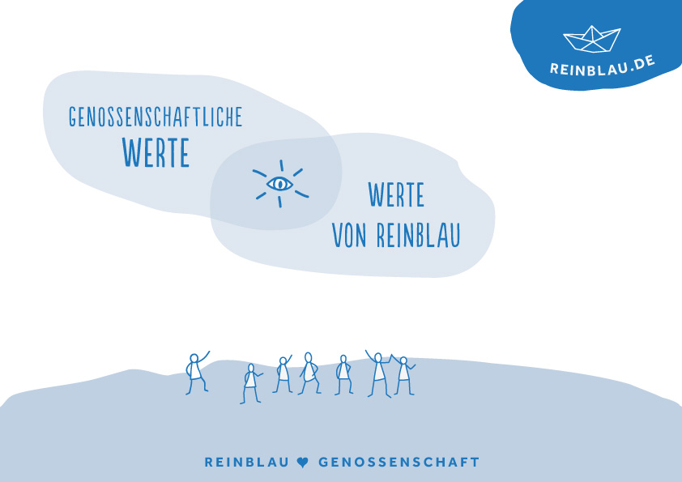
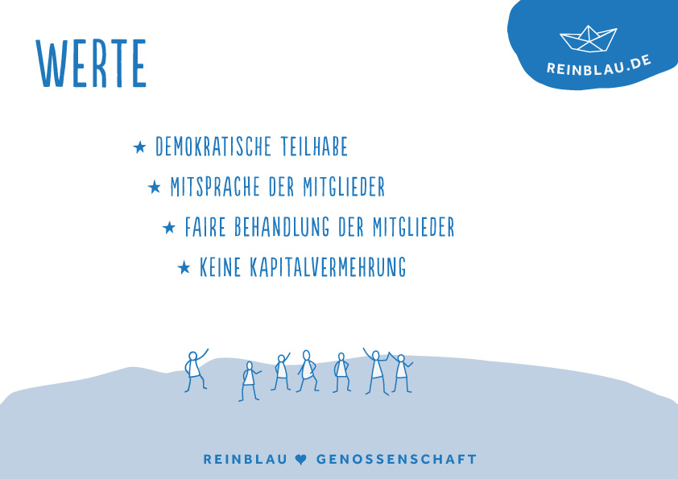
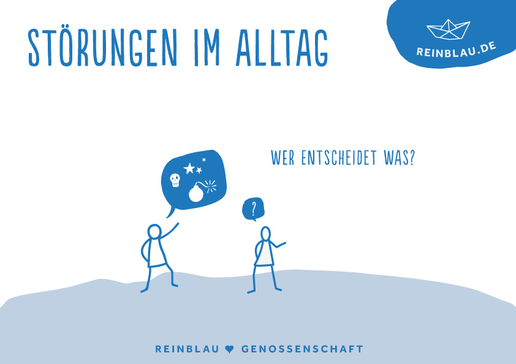
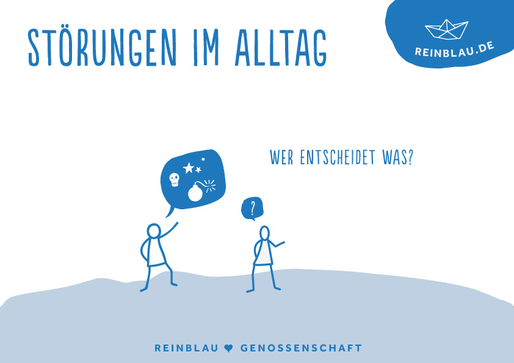
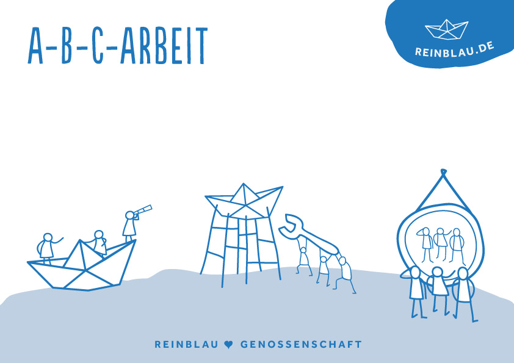
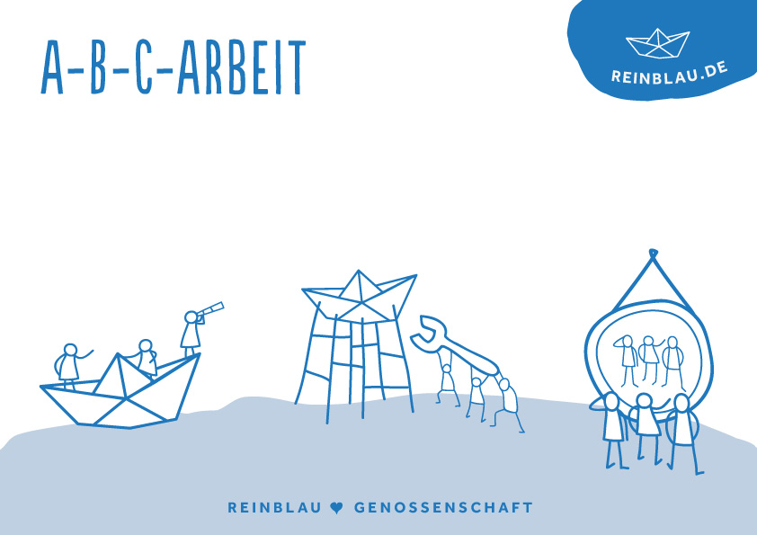
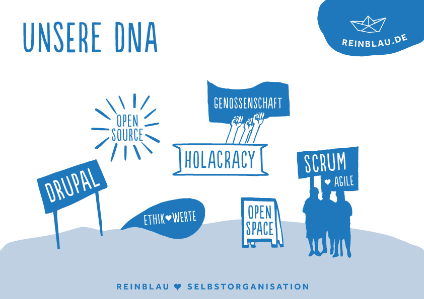
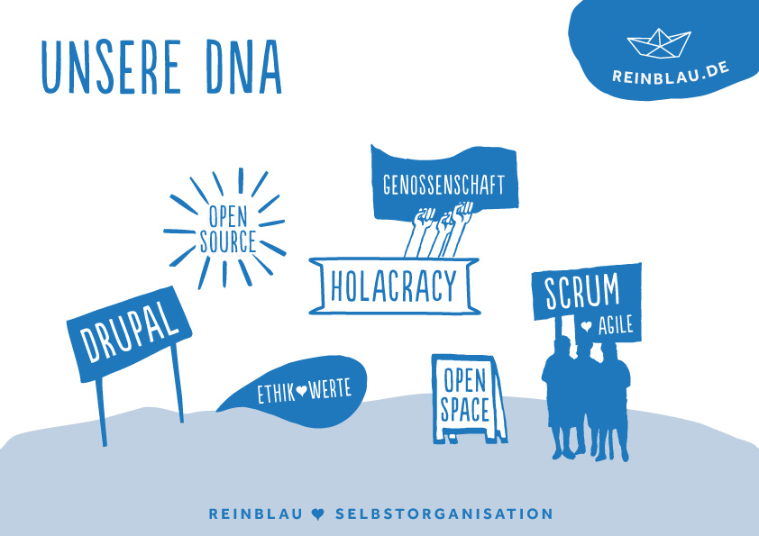

„Die Firma sind wir!“
Die ersten 22 Monate als Genossenschaft
Julia Kliemann & Dietmar Gigler | Reinblau eG





 

 

 

Vielen Dank! Noch Fragen?
Kontakt:
julia.kliemann@reinblau.de | @JuliaKliemann
dietmar.gigler@reinblau.de | @dietmarg